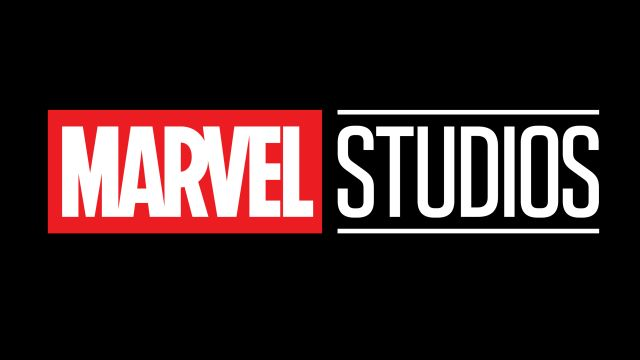

Marvel Comics is the brand name and primary imprint of Marvel Worldwide Inc., formerly Marvel Publishing, Inc. and Marvel Comics Group, a publisher of American comic books and related media. In 2009, The Walt Disney Company acquired Marvel Entertainment, Marvel Worldwide's parent company. Marvel started in 1939 as Timely Publications, and by the early 1950s, had generally become known as Atlas Comics. The Marvel branding began in 1961, the year that the company launched The Fantastic Four and other superhero titles created by Steve Ditko, Stan Lee, Jack Kirby and many others. Marvel counts among its characters such well-known superheroes as Spider-Man, Captain America, Iron Man, Thor, Wolverine, the Hulk, Daredevil, Ghost Rider, Deadpool, Doctor Strange, Black Panther and the Punisher, such teams as the Avengers, the X-Men, the Fantastic Four and the Guardians of the Galaxy, and antagonists including Doctor Doom, Red Skull, Green Goblin, Thanos, Ultron, Doctor Octopus, Magneto, Venom and Loki. Most of Marvel's fictional characters operate in a single reality known as the Marvel Universe, with most locations mirroring real-life places; many major characters are based in New York City.